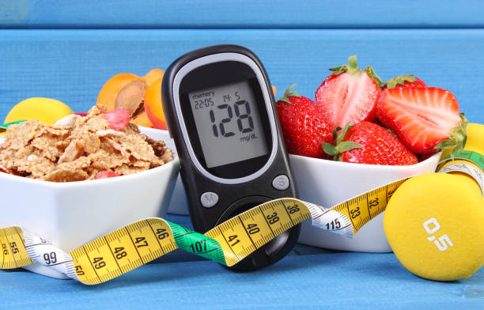

Articles
Chronic diseases And Healthy Diet
Heart Disease and Stroke
Two of the leading causes of heart disease and stroke are high blood pressure and high blood cholesterol. Consuming too much sodium can increase blood pressure and the risk for heart disease and stroke. Current guidelines recommend getting less than 2,300 mg a day, but Americans consume more than 3,400 mg a day on average.
Over 70% of the sodium that Americans eat comes from packaged, processed, store-bought, and restaurant foods. Eating foods low in saturated fats and high in fiber and increasing access to low-sodium foods, along with regular physical activity, can help prevent high blood cholesterol and high blood pressure.
Choose healthy meal and snack options to help you avoid high blood pressure and its complications. Be sure to eat plenty of fresh fruits and vegetables. Talk with your health care team about eating a variety of foods rich in potassium, fiber, and protein and lower in salt (sodium) and saturated fat. For many people, making these healthy changes can help keep blood pressure low and protect against heart disease and stroke.
Most of the sodium we consume is in the form of salt, and the vast majority of sodium we consume is in processed and restaurant foods. Your body needs a small amount of sodium to work properly, but too much sodium is bad for your health. Excess sodium can increase your blood pressure and your risk for heart disease and stroke. Together, heart disease and stroke kill more Americans each year than any other cause. [1]source.
Diabetes
Diabetes is a chronic (long-lasting) disease that affects how your body turns food into energy. There are three main types of diabetes: type 1, type 2, and gestational diabetes (diabetes while pregnant). More than 122 million Americans are living with diabetes (34.2 million) or prediabetes (88 million).
If you have diabetes or prediabetes, your doctor will likely recommend that you see a dietitian to help you develop a healthy-eating plan. The plan helps you control your blood sugar (glucose), manage your weight and control heart disease risk factors, such as high blood pressure and high blood fats.
When you eat extra calories and fat, your body creates an undesirable rise in blood glucose. If blood glucose isn't kept in check, it can lead to serious problems, such as a high blood glucose level (hyperglycemia) that, if persistent, may lead to long-term complications, such as nerve, kidney and heart damage.
You can help keep your blood glucose level in a safe range by making healthy food choices and tracking you’re eating habits. For most people with type 2 diabetes, weight loss also can make it easier to control blood glucose and offers a host of other health benefits. If you need to lose weight, a diabetes diet provides a well-organized, nutritious way to reach your goal safely.
What does a diabetes diet involve?
A diabetes diet is based on eating three meals a day at regular times. This helps you better use the insulin that your body produces or gets through a medication. A registered dietitian can help you put together a diet based on your health goals, tastes and lifestyle. He or she can also talk with you about how to improve your eating habits, such as choosing portion sizes that suit the needs for your size and activity level. Recommended foods Make your calories count with these nutritious foods. Choose healthy carbohydrates, fiber-rich foods, fish and "good" fats.
Healthy Eating For babies

Breastfeeding
Breast milk is the optimal nutrient mix for infants. It’s full of good stuff like antibodies, antimicrobial factors, enzymes, and anti-inflammatory factors along with fatty acids (which promote optimal brain development).
Breastfeeding keeps the baby developing and growing properly, helps infants fight off disease (such as gastrointestinal and respiratory infections) both now and in the future, and may even ensure that the baby grows up to prefer healthy food.
Because breastfeeding stimulates the release of beneficial hormones such as oxytocin and prolactin, it can help the mother lose weight and bond with her baby. Breast milk is delivered in a biodegradable “organic package”, so mom doesn’t need to use as much plastic packaging (since tiny humans easily absorb plastic-contained endocrine disruptors). [2]source.
The First 6 Months
Your baby is about to go through an amazing growth spurt. In their first year, babies triple their birth weight. To grow that much, they need a lot of nutrients -- more than at any other time in their life. Experts say breast milk is the best source of nutrition for babies during the first 6 months, but formula can be a good alternative.
Nutrition and Your Growing Baby
Some of the nutrients babies need to grow and stay healthy include: Calcium . Helps build strong bones and teeth. Fat. Creates energy, helps the brain develop, keeps skin and hair healthy, and protects against infections. Folate. Helps cells divide. Iron. Builds blood cells, and helps the brain develop. Breast-fed babies should receive iron supplements. Protein and carbohydrates. They provide energy and fuel growth. Zinc. Helps the cells grow and repair themselves
Your baby also needs vitamins such as:
- Vitamin A. Keeps skin, hair, vision, and the immune system healthy.
- Vitamin B1 (thiamine). Helps the body turn food into energy.
- Vitamin B1 (thiamine). Helps the body turn food into energy.
- Vitamin B2 (riboflavin). Helps the body turn food into energy, and protects cells from damage.
- Vitamin B3 (niacin). Helps the body turn food into energy and use fats and protein.
- Vitamin B6. Keeps the brain and immune system healthy.
- Vitamin B12. Keeps nerve and blood cells healthy, and makes DNA -- the genetic material in every cell.
- Vitamin C. Protects against infections, builds bones and muscles, and helps wounds heal.
- Vitamin D. Helps the body absorb calcium from food, and keeps bones and teeth healthy. Breast-fed babies may need a D supplement.
- Vitamin E. Protects cells from damage, and strengthens the immune system.
- Vitamin K. Helps the blood to clot.
What to Avoid?
One thing you don't want to give your baby during the first 12 months is whole cow's milk. It doesn't have enough iron, vitamin E, and essential fatty acids for your baby. Also, it contains too much protein, sodium, and potassium for your child's body to absorb and can cause harm. Wait to introduce cow's milk until your baby is 1-year-old.
Healthy Diet
What is a healthy diet?
Eating a healthy diet is not about strict limitations, staying unrealistically thin, or depriving yourself of the foods you love. Rather, it’s about feeling great, having more energy, improving your health, and boosting your mood.
Healthy eating doesn’t have to be overly complicated. If you feel overwhelmed by all the conflicting nutrition and diet advice out there, you’re not alone. It seems that for every expert who tells you a certain food is good for you; you’ll find another saying exactly the opposite. The truth is that while some specific foods or nutrients have been shown to have a beneficial effect on mood, it’s your overall dietary pattern that is most important. The cornerstone of a healthy diet should be to replace processed food with real food whenever possible. Eating food that is as close as possible to the way nature made it can make a huge difference to the way you think, look, and feel.
By using these simple tips, you can cut through the confusion and learn how to create—and stick to—a tasty, varied, and nutritious diet that is as good for your mind as it is for your body.
The fundamentals of healthy eating
While some extreme diets may suggest otherwise, we all need a balance of protein, fat, carbohydrates, fiber, vitamins, and minerals in our diets to sustain a healthy body. You don’t need to eliminate certain categories of food from your diet, but rather select the healthiest options from each category.
Protein
gives you the energy to get up and go—and keep going—while also supporting mood and cognitive function. Too much protein can be harmful to people with kidney disease, but the latest research suggests that many of us need more high-quality protein, especially as we age. That doesn’t mean you have to eat more animal products—a variety of plant-based sources of protein each day can ensure your body gets all the essential protein it needs.
Fat
Not all fat is the same. While bad fats can wreck your diet and increase your risk of certain diseases, good fats protect your brain and heart. In fact, healthy fats—such as omega-3s—are vital to your physical and emotional health. Including more healthy fat in your diet can help improve your mood, boost your well-being, and even trim your waistline.
Fiber
Eating foods high in dietary fiber (grains, fruit, vegetables, nuts, and beans) can help you stay regular and lower your risk for heart disease, stroke, and diabetes. It can also improve your skin and even help you to lose weight.
Calcium
As well as leading to osteoporosis, not getting enough calcium in your diet can also contribute to anxiety, depression, and sleep difficulties. Whatever your age or gender, it’s vital to include calcium-rich foods in your diet, limit those that deplete calcium, and get enough magnesium and vitamins D and K to help calcium do its job.
Carbohydrates
are one of your body’s main sources of energy. But most should come from complex, unrefined carbs (vegetables, whole grains, fruit) rather than sugars and refined carbs. Cutting back on white bread, pastries, starches, and sugar can prevent rapid spikes in blood sugar, fluctuations in mood and energy, and a build-up of fat, especially around your waistline.

It’s not just what you eat, but when you eat
Eat breakfast, and eat smaller meals throughout the day. A healthy breakfast can jumpstart your metabolism, while eating small, healthy meals keeps your energy up all day. Avoid eating late at night. Try to eat dinner earlier and fast for 14-16 hours until breakfast the next morning. Studies suggest that eating only when you’re most active and giving your digestive system a long break each day may help to regulate weight.